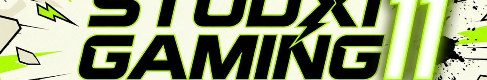

STUDXI GAMING
بيتحدّث تلقائيًا من يوتيوبكورة بروح طالب.
ولمسة مصرية.
محتوى كروي مبني على PES 2017: Master League وقصص الأندية والتحديات وتصميم الأطقم.

الجديد
أحدث الفيديوهات.
بتتحدّث لوحدها من يوتيوب.
اللعب
إيه اللي هتلاقيه هنا.
Master League وقصص الأندية
رحلات من الصفر للقمة، وإحياء أندية تاريخية.
تحديات وباتشات
تحديات وتجارب كروية متنوعة.
أطقم وهوية بصرية
تصميم أطقم الأندية وهوياتها.
الموقع
الموقع بالأرقام.
0
فيديو على الموقع
٣٠
دقيقة تقريبًا بين كل تحديث من يوتيوب
0
صفحات
جديد
OS Mode
الموقع كله جوه واجهة ماك على الكمبيوتر، وآيفون على الموبايل. جرّبه من الزر في الأعلى.
جرّب OS Modeالاجتماع
كل جمعة 3 العصر.
الاجتماع الأسبوعي للقناة، بتوقيت القاهرة (حسب وصف القناة).